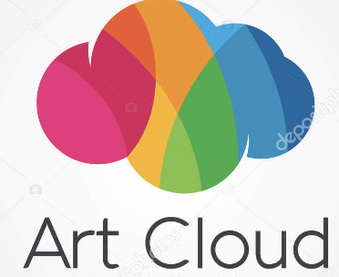

Overview
Purpose
The purpose of this website is to give insight on how different art/photography pieces can have an insightful impact on young artists who are looking for some inspiration. This website is the perfect place to look when trying to find innovation at it's finest!
Audience
The audience is going to be artists that are looking for inspiration in different fields. Especially throwback art pieces that have had a great impact on many people around the world. Along with extra photography pieces thrown in.
Branding
Website Logo
Style Guide
Color Palette
Palette URL:
https://coolors.co/FFCDDD-D9F0FF-FFFCC9-ABF5ED-EB95F0| Primary | Secondary | Accent 1 | Accent 2 |
|---|---|---|---|
| [#ffcddd] | [#d9foff] | [#fffcc9] | [#abf5ed] |
Typography
Heading Font: Sono
Paragraph Font: Indie Flower
Normal paragraph example
A great gallery of art to look through during intense times of antisipation. While looking through iconic blast from the past pieces that are time-less through and through. Just a simple click can take you through the glory of art and time!
Colored paragraph example
The greatest art gallery to look back on when needing to influence the generation to move the inspiration through and through!
Navigation
Site Map
Wireframes
Home